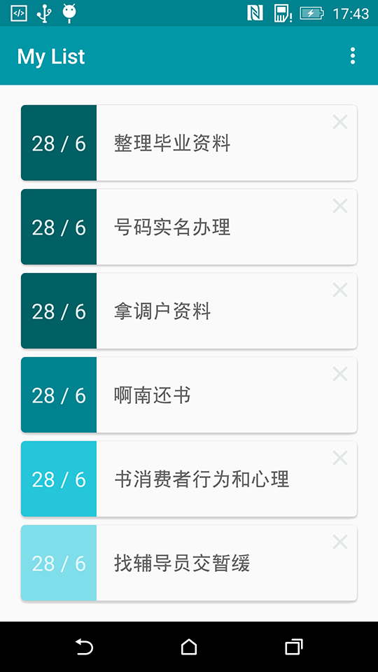
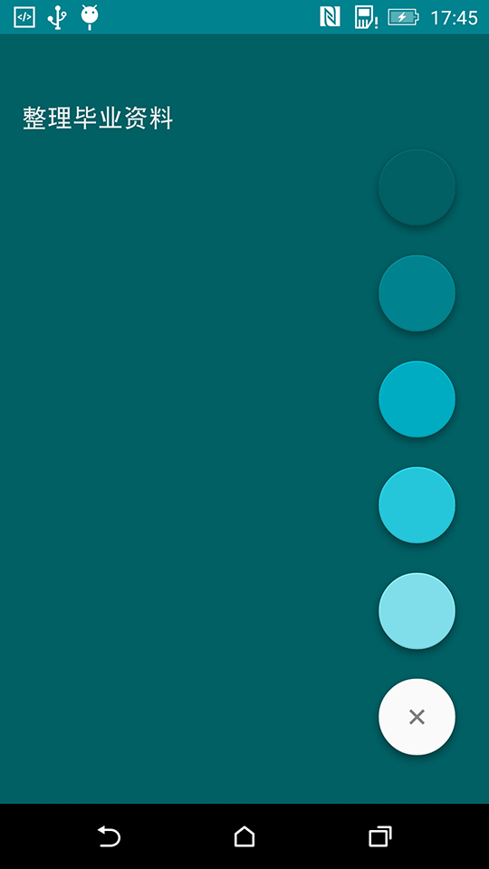

有时候忙起来很容易忘记一些事情，于是会用一些 Todo List 类型的备忘录。只是我也不太喜欢被它提醒，因为很多事情并不是急于去做。比如当我看到一本好书，想下次买书的时候一起买，可是谁知道自己下次买书具体时间。于是，我希望它简单一点，像一个便笺，让我有空的时候翻一翻就行。
于是，按照自己的需求，业余时间做了一版 Android 应用。单纯的命名为 My List，中文名暂且叫做纪录。
按照我的想法，我希望进入应用就能知道记录了一些什么事情，所以很自然的用列表去呈现它。然后就想到，记录的事情的顺序该怎么排列好，突然想到用优先级，最后选中用颜色深浅来标记优先级。深色的排在前面。
最终交互仅仅是这样的：
- 首页下拉添加新的记录
- 选择颜色标记优先级（位置）
感觉初版这样也就够了，毕竟核心功能也有了。之后还添加了个版本更新与友盟统计。
截图

风格还是采用的 Material Design。这个截图是 Android 5.0 系统的，当然也兼容 4.x。

这是个发布添加界面。刚开始是只能看到那个白色的按钮。点击之后出现颜色选择。
技术点
简单来说，这个应用开发很简单。使用的一些元素：
- Toolbar
- RecyclerView
- CardView
- SwipeRefreshLayout
- Floating Action Button
- Ormlite
大概这几个。RecyclerView 和 CardView 的是使用可以参考这个 Use Material Design。 SwipeRefreshLayout 是 v4 包里面的，下拉出一个刷新图标，只是我把这个图标改了下。Floating Action Button 是一个第三方库，其实也是 Android 5.0＋ 才有的。Ormlite 是数据库 orm 工具，可参考这个 Android Ormlite。
源码
源码在 GitHub，随手就创建了个 GitHub Pages。Download
APK 下载可以扫下面。
之后估计还会继续更新，如果你有任何关于 My List 的问题可以 EMAIL Me。